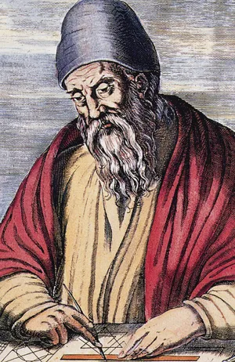
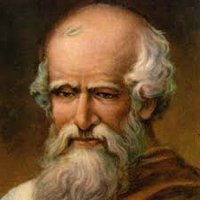

01

Euclid of Alexandria
c. 300 BCE
Ancient Greece
Euclid
Geometry · Number Theory · Logic
"There is no royal road to geometry."
Known as the "Father of Geometry," Euclid compiled and systematized the mathematical knowledge of his era in his monumental work Elements — one of the most influential textbooks ever written, used in classrooms for over two millennia.
His axiomatic approach to mathematics — building complex truths from a small set of self-evident postulates — established the foundation of rigorous mathematical proof that all subsequent mathematics rests upon.
Key Contributions
- Euclidean Geometry
- The Elements (13 books)
- Proof of infinite primes
- Axiomatic method
✦ ✦ ✦
02

Archimedes of Syracuse
c. 287 – 212 BCE
Ancient Greece
Archimedes
Calculus Precursor · Physics · Geometry
"Give me a lever long enough and a fulcrum on which to place it, and I shall move the world."
Widely regarded as the greatest mathematician of antiquity, Archimedes pioneered methods for calculating areas and volumes that prefigured integral calculus by nearly 2,000 years. His method of exhaustion was a precursor to the limit concept.
He determined an astonishingly accurate approximation of π, proved that the area of a circle equals πr², and derived the volume and surface area of a sphere — inscribing it elegantly inside a cylinder.
Key Contributions
- Approximation of π
- Method of Exhaustion
- Archimedes' Principle
- Law of the Lever
✦ ✦ ✦
03

Sir Isaac Newton
1643 – 1727
England
Isaac Newton
Calculus · Physics · Optics
"If I have seen further, it is by standing on the shoulders of giants."
Newton independently invented calculus (simultaneously with Leibniz), providing humanity with its most powerful mathematical tool for describing change and motion. His Principia Mathematica formulated the laws of motion and universal gravitation.
Working largely in isolation during the plague years of 1665–1666 — his so-called "miracle years" — Newton made breakthroughs in calculus, optics, and celestial mechanics that defined physics for the next two centuries.
Key Contributions
- Differential Calculus
- Laws of Motion
- Law of Gravitation
- Binomial Theorem
✦ ✦ ✦
04

Leonhard Euler
1707 – 1783
Switzerland
Leonhard Euler
Analysis · Graph Theory · Number Theory
"Mathematicians have tried in vain to this day to discover some order in the sequence of prime numbers, and we have reason to believe that it is a mystery into which the human mind will never penetrate."
The most prolific mathematician in history, Euler introduced much of the notation still used today — including f(x), e, i, Σ, and π in its modern context. He continued producing landmark mathematics even after losing his sight completely.
His identity eiπ + 1 = 0 — connecting five fundamental constants — is often called the most beautiful equation in mathematics.
Key Contributions
- Euler's Identity
- Graph Theory (Königsberg)
- Euler's Formula
- Modern Math Notation
✦ ✦ ✦
05

Carl Friedrich Gauss
1777 – 1855
Germany
Carl Friedrich Gauss
Number Theory · Statistics · Geometry
"Mathematics is the queen of the sciences, and number theory is the queen of mathematics."
Often called the "Prince of Mathematics," Gauss demonstrated extraordinary ability from childhood — reportedly summing the integers 1 to 100 almost instantly at age 10. His Disquisitiones Arithmeticae at age 21 transformed number theory into a rigorous discipline.
Gauss contributed to an astonishing range of fields: statistics (the Gaussian distribution), differential geometry, electromagnetism, and the construction of a 17-sided polygon using only compass and straightedge.
Key Contributions
- Gaussian Distribution
- Number Theory
- Non-Euclidean Geometry
- Least Squares Method
✦ ✦ ✦
06

Amalie Emmy Noether
1882 – 1935
Germany · USA
Emmy Noether
Abstract Algebra · Theoretical Physics
"My methods are really methods of working and thinking; this is why they have crept in everywhere anonymously."
Called the most important woman in the history of mathematics by Albert Einstein, Emmy Noether revolutionized abstract algebra and made a profound contribution to theoretical physics. She overcame enormous institutional barriers — initially not permitted to lecture under her own name in Germany.
Noether's Theorem (1915) is a cornerstone of modern physics: it proves that every symmetry in nature corresponds to a conserved quantity — linking the symmetry of time to conservation of energy, and so on. It underpins quantum mechanics and general relativity alike.
Key Contributions
- Noether's Theorem
- Abstract Algebra
- Ring Theory
- Invariant Theory
✦ ✦ ✦
07

Srinivasa Ramanujan
1887 – 1920
India
Srinivasa Ramanujan
Number Theory · Infinite Series · Analysis
"An equation for me has no meaning unless it expresses a thought of God."
Almost entirely self-taught, Ramanujan emerged from poverty in Madras to become one of history's most extraordinary mathematical minds. He sent a letter packed with theorems to Cambridge mathematician G. H. Hardy in 1913 — Hardy declared some results "must be true because no one could have the imagination to invent them."
In a tragically brief life of 32 years, Ramanujan produced results in number theory, infinite series, and continued fractions that mathematicians are still proving and exploring today. His notebooks continue to inspire discoveries a century later.
Key Contributions
- Ramanujan Prime
- Ramanujan–Hardy number (1729)
- Mock Theta Functions
- Infinite Series for π